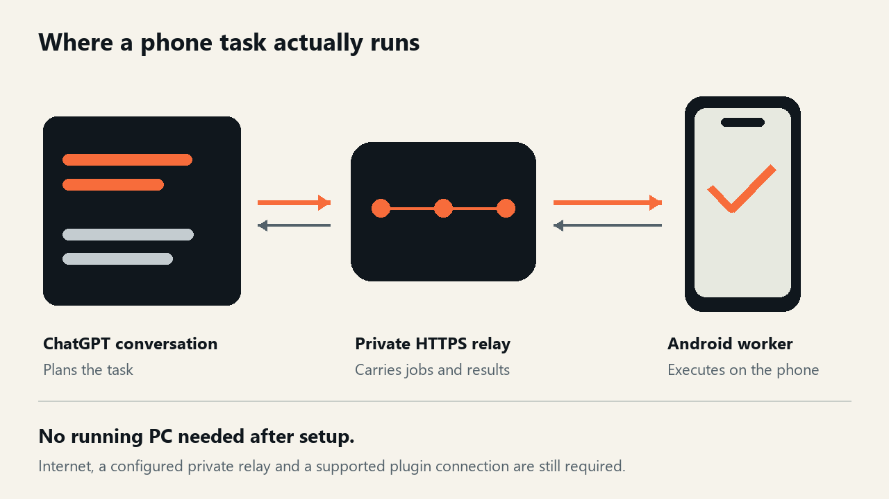

RelayKite
RelayKiteArchitecture guide · October 13, 2026
Control Android from ChatGPT without a running PC
“Without a PC” is useful only when you know which part of the system does the work. In RelayKite, the phone executes actions. Your ChatGPT conversation supplies the AI decisions, and a private relay carries the tasks and results.
By kalabuxova1-hash, project maintainer. This is an explanation and verification plan from the project, not an independent device review.

Three parts, three jobs
ChatGPT: interprets your request and invokes the tools exposed by your personal plugin. The model is not installed in the phone worker.
Your private HTTPS relay: provides the MCP tools, authenticates the connection and holds jobs for your local worker. Each owner configures their own credentials and deployment.
Your Android worker: runs in Termux, with startup through Magisk. It polls for jobs, performs permitted UI, file or system actions locally, and sends results back.
ChatGPT → personal plugin → private HTTPS relay
↕
Android worker
↓
UI / files / local commandsWhat the computer can stop doing
After setup, the phone worker does not depend on a continuously running desktop ADB session. You can switch the computer off and disconnect USB while the Android worker and private relay continue to operate.
This does not make the system offline. ChatGPT, network access, your HTTPS relay and a running worker are still necessary. Initial root preparation and installation may require a computer. A secure first unlock after reboot, battery management or a stopped Termux process can affect availability.
What a small task looks like
Start with “Check my phone's status.” The plugin calls the status tool; the relay queues the request; the worker reads the device status and returns a result. Then try “Open Settings and read the screen.” Inspect the result before asking for a tap or change.
These are illustrative request sequences. They do not claim that a particular device test has been completed.
Verify the no-PC claim yourself
- Install on your own test device using the Android guide. Check requirements, checksum and your private plugin connection.
- Request status and verify that it refers to the intended device.
- Disconnect USB and switch the computer completely off.
- Request status again, open a test app, inspect its UI and create a small file in a chosen test folder.
- Check the real app and file on the phone. Record success, failure and any manual steps.
- Repeat after a restart and first unlock, then under battery-saving and network changes.
- Verify access revocation separately. An old connection should no longer execute new jobs.
This is a proposed test plan. The documented personal configuration is Redmi Turbo 3 / Android 16 / Magisk / Termux; public release checks include host/mock tests. A successful mock test does not establish compatibility with your physical phone.
How to interpret a failure
If status is unavailable, first check the worker, network and relay rather than repeating UI actions. If a job's result is uncertain, inspect the device and job receipt before retrying. Repeating an unknown action can execute it twice.
Opening an app successfully does not prove every screen can be automated. Android permissions, secure screens, UI layout and installed components determine what is possible.
Try it with clear expectations
RelayKite is useful when you want your own AI conversation to reach device tools through a connection you configure. It requires setup, account support and real-device verification.